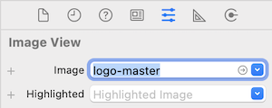
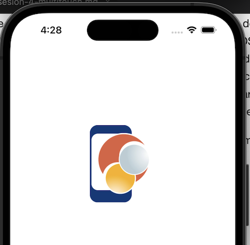
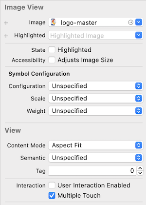

4- Detección de gestos
Pantalla táctil
El sensor de pantalla es, obviamente, el más usado y común de todos. En una aplicación iOS que utilice los componentes básicos de UIKit como tablas, botones, campos de texto, etc. problamente no tendremos que preocuparnos por gestionar los eventos producidos por el sensor de la pantalla. En aplicaciones como juegos, o más elaboradas, es muy habitual que tengamos que hacer uso de los eventos que detallaremos a continuación.
La gestión de eventos de entrada (Touch Events) se realiza a través de los siguientes métodos, que más adelante detallaremos mediante un ejemplo:
func touchesBegan(Set<UITouch>, with: UIEvent?): Captura las pulsaciones sobre la pantalla. El método recibe la lista de pulsaciones que se detectan.func touchesMoved(Set<UITouch>, with: UIEvent?): Captura los movimientos de las pulsaciones sobre la pantallafunc touchesEnded(Set<UITouch>, with: UIEvent?): Captura las últimas pulsaciones sobre la pantallafunc touchesCancelled(Set<UITouch>, with: UIEvent?): Evento que se ejecuta cuando cerramos la aplicación o la vista mientras se está detectando pulsaciones en la pantalla, o cuando se interrumpe por un evento externo como una llamada.
En general, estos eventos pertenecen a la clase UIResponder. Puedes obtener más información sobre esta clase aquí. Además de los eventos de pulsación sobre la pantalla, controla los de movimiento (por ejemplo cuando se agita el dispositivo) y los de control remoto (cuando se dispone de un dispositivo externo de control).
Los dispositivos iOS también admiten varias pulsaciones al mismo tiempo, lo que se le conoce con el nombre de multitouch. Esta característica hay que tenerla en cuenta a la hora de implementar los métodos anteriores. Para entrar más en profundidad en el uso de las funciones de pulsaciones en iOS, vamos a realizar una aplicación de ejemplo en la que arrastraremos una imagen por la pantalla de nuestro dispositivo.
Ejercicio 1 - Gestos
Comenzamos creando un proyecto en XCode de tipo App con storyboard que guardaremos con el nombre ejercicio_touch. Creamos un objeto de tipo UIImageView, lo arrastramos a la vista colocándolo en la parte superior izquierda de la pantalla, y lo enlazamos a nuestro ViewController para crear la propiedad, a la que llamaremos imageView.
Arrastra la imagen logo-master.png al proyecto y asígnala a la vista como se indica a continuación (aunque también se podría hacer por código):
{kind=link}

Ahora editamos el archivo ViewController.swift, y añadimos un Outlet que enlazamos con nuestro UIImageView y un booleano llamado tocaImagen. Debe quedar de la siguiente forma:
@IBOutlet weak var imageView: UIImageView!
var tocaImagen = false
Como se puede ver tenemos dos propiedades: una imagen que podremos mover por la pantalla, y un booleano que utilizaremos para indicar si la estamos moviendo o no. Ahora añadimos al fichero ViewController.swift los cuatro métodos que gestionan los gestos:
override func touchesBegan(_ touches: Set<UITouch>, with event: UIEvent?) {
if let touch = touches.first {
print("Touches began")
let loc = touch.location(in: self.view)
if self.imageView.frame.contains(loc) {
print("Detectado toque sobre la imagen")
self.tocaImagen = true
}
}
super.touchesBegan(touches, with: event)
}
override func touchesMoved(_ touches: Set<UITouch>, with event: UIEvent?) {
if let touch = touches.first {
print("Touches moved")
let loc = touch.location(in: self.view)
if self.tocaImagen == true {
self.imageView.center = loc
}
}
super.touchesMoved(touches, with: event)
}
override func touchesEnded(_ touches: Set<UITouch>, with event: UIEvent?) {
print("Touches ended")
self.tocaImagen = false
super.touchesEnded(touches, with: event)
}
override func touchesCancelled(_ touches: Set<UITouch>, with event: UIEvent?) {
print("Touches cancelled")
self.tocaImagen = false
super.touchesCancelled(touches, with: event)
}
Como podemos observar en el código anterior, hemos utilizado la clase de UIKit UITouch. Esta clase representa el evento de toque. Al mismo tiempo que el usuario interactúa con la pantalla, iOS envía continuamente mensajes al evento correspondiente (uno de los cuatro comentados anteriormente). Cada evento incluye información sobre los distintos toques en la secuencia producida por el usuario y cada toque en particular corresponde a una instancia de la clase UITouch.
Con esto último ya podemos ejecutar la aplicación y veremos que podemos pulsar sobre la imagen y arrastrarla.

El funcionamiento de estos métodos es muy simple. Primero se ejecuta touchesBegan que detecta el primer toque sobre la pantalla, en el comprobamos si la posición del toque está dentro del cuadro (frame) del UIImageView. Si es así actualizamos la variable booleana a true, y en caso contrario no hacemos nada. En el momento en que arrastremos el dedo sobre la pantalla se ejecutará continuamente el método touchesMoved. En este, si la variable booleana tocaImagen está a true actualizamos la posición de la imagen a la posición detectada, y en caso contrario no hacemos nada. Por último, cuando dejamos de pulsar la pantalla se ejecutará el método touchesEnded el cual simplemente volverá a actualizar la variable booleana a false.
Si queremos detectar varios toques al mismo tiempo, primero deberemos activarlo, por ejemplo en viewDidLoad:
self.imageView.isMultipleTouchEnabled = true
También podríamos haberlo hecho desde el Storyboard, pinchando sobre el UIImageView:

Y luego podemos gestionar los toques simultáneos como en el siguiente ejemplo, en el que vamos a modificar el método touchesBegan:
override func touchesBegan(_ touches: Set<UITouch>, with event: UIEvent?) {
if let touch = touches.first { // Sólo nos centramos en el primer toque
print("Touches began")
let touchCount = event!.allTouches!.count // Número de dedos pulsando
let tapCount = touch.tapCount // Núero de pulsaciones rápidas
print("Finger count= \(touchCount)")
print("Tap count= \(tapCount)")
let loc = touch.location(in: self.view)
if self.imageView.frame.contains(loc) {
print("Detectado toque sobre la imagen")
self.tocaImagen = true
}
}
super.touchesBegan(touches, with: event)
}
En el fragmento de código anterior, si se ha hecho alguna pulsación distinguimos primero el número de dedos y luego comprobamos el número de pulsaciones rápidas (equivalente a un doble click del ratón). Esto es un claro ejemplo de gestión de la función multitouch de iOS y, como se puede ver, es bastante simple de implementar.
Para simular dos pulsaciones al mismo tiempo en el simulador de iPhone/iPad de XCode, podemos pulsar la tecla
alt(opción) mientras movemos el cursor.
Desde XCode 7 existe la opción de usar 3D touch, que básicamente consiste en un sensor de presión para la pantalla de forma que se puedan ejecutar distintas acciones en función del grado de presión. Desde XCode 7.3 podemos usar el simulador para esto (antes estaba limitado a dispositivos reales). No vamos a entrar en detalles sobre el 3D Touch, pero si quieres saber más la clase UITouch tiene una propiedad adicional llamada force que se usa para medir la fuerza de la pulsación del usuario con respecto a una fuerza máxima cuyo valor es maximumPossibleForce.
if self.traitCollection.forceTouchCapability == UIForceTouchCapability.available {
print("Force= \(touch.force) from \(touch.maximumPossibleForce)")
}
En algunos modelos de iPad también se puede usar un lápiz digital (Apple Pencil). Podemos distinguir un trazo del lápiz de una pulsación del dedo mediante la siguiente condición:
if touch.type == .stylus {
print("Stylus detected")
}
Además, desde el iPhone 7 Apple ha introducido Haptic Feedback, que permite responder físicamente a las interacciones del usuario con la pantalla. Para más información, se puede consultar la referencia de la clase UIFeedbackGenerator.
Reconocimiento de gestos multitáctiles con UIGestureRecognizer
En el apartado anterior hemos visto como mover un objeto por la pantalla usando los métodos de detección de pulsaciones en la pantalla y programando todo el código nosotros.
Esto está bien para gestos simples, pero el problema de lo que hemos implementado anteriormente es que si queremos detectar un gesto como un swipe, tendremos que registrar las notificaciones para cada toque de las vistas (usando touchesBegan, touchesMoved y touchesEnded). En las primeras versiones de iOS cada programador escribía código distinto para detectar los toques en la pantalla, provocando bugs e incosistencias entre apps.
Para evitar esto, hace mucho tiempo (iOS 3) Apple añadió la clase UIGestureRecognizer para los gestos comunes en iOS. Esta clase nos permite gestionar los toques, el efecto "pellizco" (por ejemplo para hacer zoom), rotaciones, swipes, pans, y pulsaciones largas, entre otras. Usando esta clase no sólo ahorramos mucho código sino que también hacemos que nuestras apps sean consistentes. Los gestos que podemos gestionar en iOS son los siguientes:
- Toque (tap): Consiste en presionar o hacer "click" sobre un botón o cualquier objeto que esté en pantalla.
- Arrastre (drag): Mover el dedo sobre la pantalla en una dirección, puede usarse para navegar sobre los elementos de una tabla, por ejemplo.
- Arrastre rápido (flick): Como el anterior, pero más rápido. Sirve para moverse por la pantalla de forma rápida.
- Arrastre lateral (swipe): Mover el dedo en dirección horizontal, sirve para mostrar el botón de "Eliminar" en una fila de una tabla.
- Doble toque (double tap): Presionar dos veces seguidas y de forma rápida la pantalla. Sirve para aumentar una imagen o un mapa, por ejemplo.
- Pellizco exterior (pinch open): Gesto de pellizco sobre la pantalla que sirve para aumentar una imagen o un mapa.
- Pellizco interior (pinch close): El inverso del anterior.
- Toque continuo (touch and hold): Como el toque básico, pero manteniendo el dedo sobre la pantalla. Sirve para mostrar un menu contextual sobre la zona que se pulsa.
- Agitar (shake): Para inicializar una acción de deshacer (undo) o rehacer (redo).
- 3D touch (hard press): Los modelos posteriores a iPhone 6S añaden un gesto 3D que se activa cuando pulsamos la pantallas con una presión mayor. Se usa para mostrar información como un peek (una vista flotante) o pop (menú contextual).
Puedes ver los movimientos en detalle en la guía de estilo, sección Inputs > Touchscreen gestures.
Usar la clase UIGestureRecognizer es muy sencillo, simplemente hay que:
* Crear un Gesture Recognizer. Cuando se crea un elemento de esta clase debemos especificar una función callback. Esta función se llamará cuando los gestos empiecen, cambien o terminen.
* Añadir un Gesture Recognizer a la vista. Cada gesture recognizer se asocia con una (y sólo una) vista. Cuando se produce un gesto dentro de los límites de esa vista, el recognizer mirará si coincide con el tipo de gesto buscado, y si es así se notificará mediante la función callback.
Podemos añadir un Gesture Recognizer mediante código o usando el storyboard. Veremos como hacerlo de las dos formas mediante un ejercicio sencillo similar al anterior.
Ejercicio 2 - Multitouch
Crea un nuevo proyecto y llámalo ejercicio_multitouch. Como en el anterior, añade una UIImageView en la parte superior izquierda de la vista, asígnale la imagen logo-master y enlázala con el controlador. Recuerda marcar para el UIImageView desde el Storyboard las casillas User Interaction Enabled y seleccionar Multiple Touch. Alternativamente puedes hacerlo mediante código en viewDidLoad:
self.imageView.isUserInteractionEnabled = true
self.imageView.isMultipleTouchEnabled = true
Vamos a definir un gesto que realice la función de pulsación, similar a lo realizado en el primer ejemplo, pero con UIGestureRecognizer. Para ello, en ViewController.swift asignamos el protocolo:
class ViewController : UIViewController, UIGestureRecognizerDelegate
Y en el fichero ViewController.swift añadimos lo siguiente al final del método viewDidLoad:
let tap = UITapGestureRecognizer(target: self, action:#selector(handleTap))
tap.delegate = self
self.imageView.addGestureRecognizer(tap)
En el código anterior nos hemos definido un objeto de la clase UITapGestureRecognizer, al cual le hemos asignado una acción llamada handleTap que se ejecutará cuando se detecte una pulsación. También hemos asignado el objeto creado a la imagen para que los gestos estén únicamente asociados a esa vista.
Ahora implementamos el método handleTap:
@objc func handleTap(sender: UITapGestureRecognizer) {
print("Tap");
}
Si volvemos a ejecutar la aplicación veremos que aparece el mensaje "Tap" cuando pulsamos sobre la imagen.
A continuación vamos a añadir los gestos de arrastre, rotación y pellizco de la misma manera que hemos implementado el de pulsación:
// Gesto de pulsar y arrastrar
let pan = UIPanGestureRecognizer(target: self, action:#selector(handlePan))
pan.delegate = self
self.imageView.addGestureRecognizer(pan)
// Gesto de rotación
let rotation = UIRotationGestureRecognizer(target: self, action:#selector(handleRotation))
rotation.delegate = self
self.imageView.addGestureRecognizer(rotation)
// Gesto de pellizcar
let pinch = UIPinchGestureRecognizer(target: self, action:#selector(handlePinch))
pinch.delegate = self
self.imageView.addGestureRecognizer(pinch)
Implementamos los métodos de las acciones:
@objc func handlePan(sender: UIPanGestureRecognizer) {
print("Pan")
let translation = sender.translation(in: self.view)
if let view = sender.view {
view.center = CGPoint(x: view.center.x + translation.x, y: view.center.y + translation.y)
}
sender.setTranslation(CGPoint.zero, in: self.view)
}
@objc func handleRotation(sender: UIRotationGestureRecognizer) {
print("Rotation")
if let view = sender.view {
view.transform = view.transform.rotated(by: sender.rotation)
sender.rotation = 0
}
}
@objc func handlePinch(sender: UIPinchGestureRecognizer) {
print("Pinch")
if let view = sender.view {
view.transform = view.transform.scaledBy(x: sender.scale, y: sender.scale)
sender.scale = 1;
}
}
Si ejecutamos la aplicación veremos que funciona todo correctamente pero al intentar realizar dos gestos al mismo tiempo estos no funcionan de manera simultánea por ejemplo, ampliar y rotar). Para que dos o más gestos se puedan usar al mismo tiempo, en el fichero ViewController.swift tenemos que implementar el método shouldRecognizeSimultaneouslyWithGestureRecognizer:
func gestureRecognizer(_ gestureRecognizer: UIGestureRecognizer, shouldRecognizeSimultaneouslyWith otherGestureRecognizer: UIGestureRecognizer) -> Bool {
return true
}
Si volvemos a ejecutar la aplicación de nuevo, veremos que ya podemos realizar dos o más gestos al mismo tiempo.
En total podemos usar los siguientes gestos en nuestras aplicaciones, además de crear los nuestros propios creando subclases de UIGestureRecognizer:
UITapGestureRecognizerUIPinchGestureRecognizerUIRotationGestureRecognizerUISwipeGestureRecognizerUIPanGestureRecognizerUIScreenEdgePanGestureRecognizerUILongPressGestureRecognizer
Y esto es lo básico para poder implementar reconocimiento de gestos en nuestra aplicación.
Para finalizar vamos a implementar un gesto adicional, pero en lugar de hacerlo mediante código lo haremos desde el storyboard para verlo de una forma alternativa. Para añadirlo desde el storyboard (aunque probablemente es más rápido desde código), selecciona el gesto Long press Gesture Recognizer de la Librería (con el botón +) y arrástralo sobre la imagen.
Puedes cambiar desde el interfaz sus parámetros, como por ejemplo la duración mínima. Finalmente asigna un método al gesto, arrastrando el objeto al código de la clase y seleccionando Action, y conecta el delegado con el ViewController. El método debe imprimir el mensaje print("long press") cuando se realice una pulsación larga sobre la imagen. Con el botón derecho sobre el gesto puedes ver con qué objeto se relaciona y cambiarlo si es necesario.